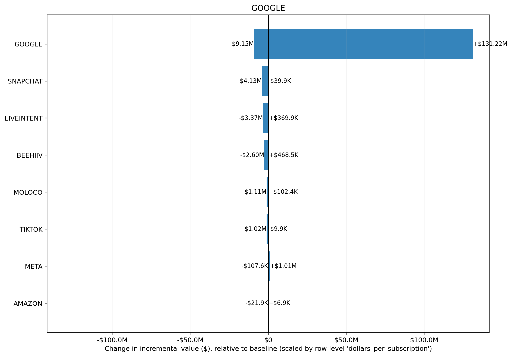

Input CSV: tornado_google.csv
Channels altered: GOOGLE
Value Scaling: scaled by row-level 'dollars_per_subscription'
Selection objective: total_new_value
Best prior setup: ROI_PRIOR_OVERRIDES: NA(mu=NA, sigma=NA) | STRUCTURAL_OVERRIDES: NA(mu=NA, sigma=NA)
| prior_setup | total_new_value | delta_value_vs_baseline | delta_roi |
|---|---|---|---|
| ROI_PRIOR_OVERRIDES: NA(mu=NA, sigma=NA) | STRUCTURAL_OVERRIDES: NA(mu=NA, sigma=NA) | $208.73M | +$149.04M | 775.50% |
| ROI_PRIOR_OVERRIDES: NA(mu=NA, sigma=NA) | STRUCTURAL_OVERRIDES: NA(mu=NA, sigma=NA) | $172.42M | +$112.73M | 586.58% |
| ROI_PRIOR_OVERRIDES: NA(mu=NA, sigma=NA) | STRUCTURAL_OVERRIDES: NA(mu=NA, sigma=NA) | $138.10M | +$78.41M | 407.99% |
| ROI_PRIOR_OVERRIDES: NA(mu=NA, sigma=NA) | STRUCTURAL_OVERRIDES: NA(mu=NA, sigma=NA) | $116.07M | +$56.38M | 293.36% |
| ROI_PRIOR_OVERRIDES: NA(mu=NA, sigma=NA) | STRUCTURAL_OVERRIDES: NA(mu=NA, sigma=NA) | $107.47M | +$47.78M | 248.61% |
| channel | delta_value | delta_roi |
|---|---|---|
| +$162.15M | 15.75% | |
| META | +$1.24M | 1.48% |
| AMAZON | -$6.9K | -0.44% |
| TIKTOK | -$1.11M | -0.63% |
| MOLOCO | -$1.46M | -1.73% |
| BEEHIIV | -$3.01M | -9.16% |
| LIVEINTENT | -$3.73M | -4.67% |
| SNAPCHAT | -$5.05M | -1.16% |
Largest sensitivity ranges are in GOOGLE (-$9.15M to $131.22M); SNAPCHAT (-$4.13M to -$39.9K); LIVEINTENT (-$3.37M to $369.9K). Biggest upside scenario is GOOGLE at $131.22M, while the largest downside scenario is GOOGLE at -$9.15M. Bars crossing zero indicate the channel can either help or hurt depending on prior assumptions; wider bars indicate greater uncertainty and model sensitivity.
